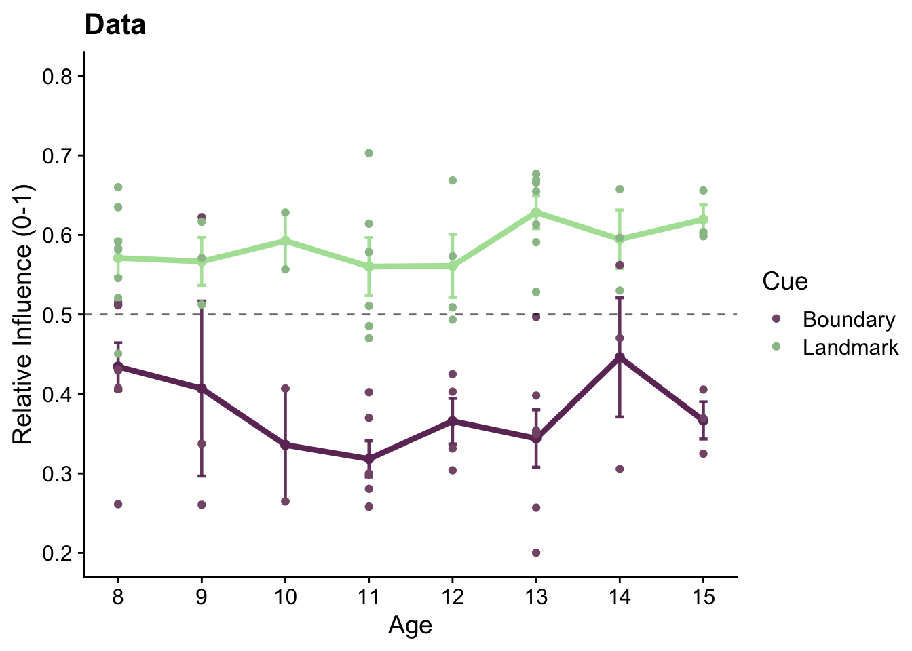

4 Angle estimation analysis
4.1 Set up
Packages used for data analysis
library(lme4)
library(tidyverse)
library(broom)
library(ggsignif)
library(patchwork)
library(gghalves)
library(cowplot)
library(scico)
library(Cairo)
library(ggnewscale)
library(here)
library(effsize)
library(pwr)## Warning: package 'pwr' was built under R version 4.0.2## Warning: package 'circular' was built under R version 4.0.2## Package 'circular', 0.4-93 (2017-06-26). Type 'help(Circular)' for summary information.
## Please report any bug or comments to Claudio Agostinelli <claudio.agostinelli@unitn.it>##
## Attaching package: 'circular'## The following objects are masked from 'package:stats':
##
## sd, varFunctions written for this analysis
#function circleFun() generates locations of 100 points that are in shape of circle
#used for mapping out the arena in graphs
circleFun <- function(center = c(0,0), r = 27.5, npoints = 100){
tt <- seq(0,2*pi,length.out = npoints)
xx <- center[1] + r * cos(tt)
yy <- center[2] + r * sin(tt)
return(data.frame(x = xx, y = yy))
}
circleSome <- function(centerX, centerY, r = 27.5, npoints = 100, a1, a2){
tt <- seq(a1,a2,length.out = npoints)
xx <- centerX + r * cos(tt)
yy <- centerY + r * sin(tt)
return(data.frame(x = xx, y = yy))
}Loading in the full dataset
Sum_all <- read_delim(here("data" ,"Sum.txt"), delim = " ", col_names = TRUE, col_types = "fdddddddfcdddddddddddddddddddddddddddddddddddddddd") Creating a list of subject IDs from the full dataset
4.1.1 Timeout session
Identifying and filtering timeout sessions i.e. trials with time over 59 seconds between trial beginning and angle estimation
#summary of timeout trials
timeout <- filter(Sum_all, secTrialEst > 59)
print(sprintf("# timeout trials: %s", nrow(timeout)))## [1] "# timeout trials: 6"## [1] "# participants with timeout trials: 6"print(sprintf("average # timeout trials per participant with timeout trials: %s", nrow(timeout)/length(unique(timeout$ID))))## [1] "average # timeout trials per participant with timeout trials: 1"## [1] "average # timeout trials per participant: 0.157894736842105"4.1.2 Exclusion criteria
Participants are excluded based on positional memory performance in block 1 which is quantified using memory scores. To be included in the analysis, participant’s memory scores from block 1 need to be significantly greater than the chance level 0.5.
exclusion <- c() #creating empty list that will contain the subject IDs that will be excluded
for (i_sub in subjects) {
score <- t.test(subset(Sum_all, ID==i_sub & block==1)$memoryScoreTraj,
mu=0.5, alternative = "greater") %>% tidy() #one-tailed t.test of block 1 memory scores against chance level 0.5
if (score$p.value > 0.05) {
exclusion <- c(exclusion, i_sub)
Sum_all <- filter(Sum_all, ID != i_sub)
}
}
print(sprintf("# participants excluded: %s", length(exclusion)))## [1] "# participants excluded: 2"## [1] "new overall sample size: 36"4.2 Descriptives
Reaction Time
We looked into reaction time (seconds between end of target object display and angle estimation).
#average RT
reaction_time_dat <- Sum_all %>%
group_by(ID, age) %>%
summarise(estResponse = mean(secTrialEst-3.5), .groups = "drop") #discounting 3.5s for a target display at the beginning of each trial when participants are locked in their position
#graph showing distribution, 1 point per participant
ggplot(reaction_time_dat, aes(x=0, y=estResponse)) +
geom_half_violin(aes(x=-0.05), fill=scico(1, palette = "acton", begin = 0.45), alpha =0.5, color=NA) +
geom_point(aes(x=0.105, color=age), position = position_jitter(width =0.05, height = 0), shape=16, size = 2) +
scale_color_scico(palette = "acton") +
geom_boxplot(width = .08, outlier.shape = NA) +
theme_cowplot() +
ylab('RT') + xlab('') +
theme(axis.text.x = element_blank(),
axis.ticks.x = element_blank(),
aspect.ratio =1,
plot.title = element_text(face="italic", size=12)) +
scale_y_continuous(limits=c(0, 15))
#actual average RT and sd
reaction_time <- summarise(reaction_time_dat, mean = mean(estResponse), sd=sd(estResponse), min=min(estResponse), max=max(estResponse))
reaction_time## # A tibble: 1 × 4
## mean sd min max
## <dbl> <dbl> <dbl> <dbl>
## 1 6.60 2.51 2.83 12.2print(sprintf("The average reaction time for pointing was %s seconds (sd = %s).", round(reaction_time$mean, 3), round(reaction_time$sd, 3)))## [1] "The average reaction time for pointing was 6.601 seconds (sd = 2.514)."4.3 Block 1 Performance
This subsection of the analysis aims to answer whether the participants completed the basic task according to the instructions before any manipulation was introduced. Did they understand how to rotate and indicate their angle estimation?
4.3.1 Raw Angle Error Visualization
First, let’s look on how participants performed by examining the signed angle error distribution. 0° as “correct angle”.
g_anglB1 <- ggplot(Sum_all %>% filter(block == 1), aes(x = angleError)) +
# creating histogram to see the distribution
geom_histogram(binwidth = 10, boundary=0, fill = scico(1, palette = "lajolla", begin=0.5), color= "black", size = .25) +
# rounding the histogram to 360° circle
coord_polar(start=pi) +
# specifying the limits and breaks
scale_x_continuous(limits = c(-180,180),
breaks = seq(-180, 180, by = 45),
minor_breaks = seq(-180, 180, by = 15)) +
# background/plot style
theme_cowplot() +
background_grid() +
# changing labels and title
labs(x = "Pointing Error (°)", y = "Count", title = "Signed Distribution of Error") +
theme(axis.title.y = element_text(hjust = 0.7))
g_anglB1
4.3.2 Angle Error Stats
Data summarizing for each participant for block 1.
summaryBlock1_Angle <- Sum_all %>%
filter(block==1) %>%
group_by(ID, block) %>%
summarise(angleErr = mean(abs(angleError)), .groups="drop") T-Test
We took 90° as a threshold of randomness (possible absolute angle error 0-180°). To see whether participants pointed better than on average randomly, we ran a one sample, one-tailed t-test of their average absolute angle error in block 1 against 90. To see the effect size we calculated cohen’s d.
## # A tibble: 1 × 8
## estimate statistic p.value parameter conf.low conf.high method alternative
## <dbl> <dbl> <dbl> <dbl> <dbl> <dbl> <chr> <chr>
## 1 20.8 -34.4 7.25e-29 35 -Inf 24.2 One Sample t-test less##
## Cohen's d (single sample)
##
## d estimate: -5.729989 (large)
## Reference mu: 90
## 95 percent confidence interval:
## lower upper
## -7.258813 -4.201166Graph
The graph below shows the average absolute angle error in block 1 for each participant and consequentially the distribution of these values.
g_errB1 <- ggplot(summaryBlock1_Angle, aes(x=block, y=angleErr)) +
# violin plot
geom_half_violin(aes(x=block-0.05), fill=scico(1, palette= "lajolla", begin = 0.45), alpha =0.5, color=NA) +
# single subject data points (1 per participant) with horizontal jitter
geom_point(aes(x=block+0.07), position = position_jitter(width =0.02, height = 0), shape=16, size = 1) +
# boxplot (median, quartiles)
geom_boxplot(width = .05, outlier.shape = NA) +
# adding plot of mean and SEM
stat_summary(fun = mean, geom = "point", size=1, shape = 16,
position = position_nudge(-.05), colour = "black") +
stat_summary(fun.data = mean_se, geom = "errorbar",
position = position_nudge(-.05), colour = "black", width = 0, size = 0.5) +
geom_hline(yintercept = 90, linetype=2) +
annotate("text", label = "90°", x = 1.3, y = 85, size = 3) +
labs(y='Pointing Error (°)', x=' ', title = "Average Absolute Error") +
theme_cowplot() +
theme(axis.title = element_text(size=10), axis.text.x = element_blank(),
axis.ticks.x = element_blank(), axis.text.y = element_text(size=10))
#show graph
g_errB1
Assembly of block 1 graphs for pointing task.
angleEst_B1 <- g_errB1 + g_anglB1 &
# unifying aesthetics
theme(axis.title = element_text(size=12), plot.title = element_text(face="italic", size=12)) &
# assembly title
plot_annotation(title = 'Pointing Errors',
theme = theme(plot.title = element_text(size = 14, face="bold")))
# saving as pdf and png
ggsave(file="AngleErrors_B1.pdf", plot=angleEst_B1, units = "cm", width = 15.9, height = 10, dpi = "retina", device = cairo_pdf, path = here("figures"))
ggsave(file="AngleErrors_B1.png", plot=angleEst_B1, units = "cm", width = 15.9, height = 10, dpi = "retina", device = "png", path = here("figures"))
angleEst_B1Assembly of block 1 graphs for positional memory and pointing task.
block1_graphs <- memory_B1 / angleEst_B1 &
# unifying aesthetics
theme(axis.title = element_text(size=10), axis.text = element_text(size=10),
plot.title = element_text(face="italic", size=12),
legend.text = element_text(size=10), legend.title = element_text(size=10),
plot.tag = element_text(size = 10, face="bold")) &
# assembly title, subtitle and tags
plot_annotation(title = 'Block 1 Performance',
subtitle = ' \nPositional Memory',
theme = theme(plot.title = element_text(size = 14, face="bold"), plot.subtitle = element_text(size=12, face="bold")),
tag_levels = 'A')
#saving as pdf and png
ggsave(file="B1.pdf", plot=block1_graphs, units = "cm", width = 15, height = 16, dpi = "retina", device = cairo_pdf, path = here("figures"))
ggsave(file="B1.png", plot=block1_graphs, units = "cm", width = 15, height = 16, dpi = "retina", device = "png", path = here("figures"))
block1_graphs4.4 Cue Differences
Next we wanted to investigate whether the participants followed the cues in block 2-4 after landmark and landmark-dependent object movement. Also, is there performance difference between landmark- vs boundary-dependent objects?
4.4.1 Relative Influence
To evaluate, which cue participants are using to remember the direction of target object we used relative influence which was created and first used by Doeller, King and Burgess (2008). However, we were the first to use this measurement for angle estimation/pointing. The graph below shows the calculation.
Explanation Graph
#loading a data from block 2-4 for a single participant
graph_sub <- filter(Sum_all, ID == i_sub & block == 2 & trial==5)
# generating points that will form arena boundary
circle <- circleFun()
# generating points that will form angle difference between estimated angle and angle predicted by boundary
angle1 <- circleSome(centerX= graph_sub$charX, centerY= graph_sub$charY, r=15, a1= 1.5707963268-rad(graph_sub$estAngle), a2=1.5707963268-rad(graph_sub$boundaryAngle))
# generating points that will form angle difference between estimated angle and angle predicted by landmark
angle2 <- circleSome(centerX= graph_sub$charX, centerY= graph_sub$charY, r=10, a1= 1.5707963268-rad(graph_sub$estAngle), a2=1.5707963268-rad(graph_sub$landmarkAngle))
relativeAng_graph <- ggplot(data=graph_sub) +
# location predicted by landmark
geom_point(aes(x=landmarkCuePosX, y=landmarkCuePosY, color="Angle Predicted by Landmark"), size = 1.5, alpha=0.3) +
# line visualizing the angle from participant's position to the object location predicted by landmark
geom_segment(aes(x=charX, y=charY, xend= landmarkCuePosX, yend=landmarkCuePosY,
color="Angle Predicted by Landmark"), alpha=.9) +
# adding aL label
annotate("text", label="aL", x=-3, y=2, size=4, color="#C6F1B1", fontface =2) +
# location predicted by boundary
geom_point(aes(x=boundaryCuePosX, y=boundaryCuePosY, color="Angle Predicted by Boundary"), size = 1.5, alpha=0.3) +
# line visualizing the angle from participant's position to the object location predicted by boundary
geom_segment(aes(x=boundaryCuePosX, y=boundaryCuePosY, xend= charX, yend= charY,
color="Angle Predicted by Boundary"), alpha=.9) +
# adding dB label
annotate("text", label="aB", x=-4.5, y=-5, size=4, color="#592758", fontface =2) +
#participants location
geom_point(aes(x=charX, y=charY, color = "Estimated Angle"), size = 2.5) +
annotate("text", label="Participant's location", x= -12, y = 12, size=3.5, color= "red") +
#landmark location
geom_point(aes(x=landmarkX, y=landmarkY), shape = 15, color = "#94A98F", size=3) +
annotate("text", label="Landmark", x= 14, y = 8.8, size=3.5, color= "#94A98F") +
#estimated angle
geom_spoke(mapping =aes(x=charX, y=charY, angle = 1.5707963268-rad(estAngle), radius =20), color="red", linetype = 1, alpha=0.8) +
# angle difference between angle predicted by boundary and estimated angle
geom_path(data=angle1, aes(x,y, color="Angle Predicted by Boundary"))+
# angle difference between angle predicted by landmark and estimated angle
geom_path(data=angle2, aes(x,y,color="Angle Predicted by Landmark"))+
# creating arena boundary
geom_path(data=circle, aes(x, y)) +
# aesthetical changes
theme_cowplot() +
theme(aspect.ratio=1,
axis.title = element_text(size=10), axis.text = element_text(size=10),
plot.title = element_text(size=12), plot.subtitle = element_text(size = 11)) +
# changing labels and title
labs(title = "Relative Influence Calculation for Angle Estimation",
subtitle = paste("aL / (aL + aB) ",
sprintf("Angle Relative Influence: %s ", round(graph_sub$relativeAngle, 2)), sep="\n"),
x= 'X (vm)', y= 'Y (vm)') +
# specifying colors manually
scale_color_manual(name = " ",
values= c("Angle Predicted by Boundary" = "#592758", "Angle Predicted by Landmark" = "#C6F1B1",
"Estimated Angle" = "red"))
# saving graph as pdf and png
ggsave(filename="relative_angle_visual.pdf", plot=relativeAng_graph, units = "cm", width = 15, height = 11,
dpi = "retina", device = cairo_pdf, path = here("figures"))
ggsave("relative_angle_visual.png", plot=relativeAng_graph, units = "cm", width = 15, height = 11,
dpi = "retina", device = "png", path = here("figures"))
# show the graph
relativeAng_graph
Let’s subset and summarize data for blocks 2-4.
subset_RA <- Sum_all %>%
filter(block!=1) %>%
select(ID, age, age_c, block, miniblock, mini, objectTrial, trial, cue, cueMM, angleError, relativeAngle, cueDissonanceAngle)
relativeAngleBlocks <- subset_RA %>%
group_by(ID, cue, age) %>%
summarise(angleErr = mean(abs(angleError)),
relativeAng = mean(relativeAngle),
raSD = sd(relativeAngle),
cueDisA = mean(cueDissonanceAngle),
.groups="drop")T-Tests
As score 0.5 points towards angle between the angle predicted by landmark and angle predicted by boundary, we ran a one sample, one tail t-test to test whether the relative scores for landmark-dependent objects are less than 0.5.
t.test(subset(relativeAngleBlocks, cue=="landmark")$relativeAng,
mu = 0.5, alternative = "less") %>% tidy()## # A tibble: 1 × 8
## estimate statistic p.value parameter conf.low conf.high method alternative
## <dbl> <dbl> <dbl> <dbl> <dbl> <dbl> <chr> <chr>
## 1 0.377 -7.63 0.00000000299 35 -Inf 0.405 One Sample t-test less##
## Cohen's d (single sample)
##
## d estimate: -1.271776 (large)
## Reference mu: 0.5
## 95 percent confidence interval:
## lower upper
## -2.0137388 -0.5298135After we ran a one sample, one tail t-test to test whether the relative scores for boundary-dependent objects are higher than 0.5.
t.test(subset(relativeAngleBlocks, cue=="boundary")$relativeAng,
mu = 0.5, alternative = "greater") %>% tidy()## # A tibble: 1 × 8
## estimate statistic p.value parameter conf.low conf.high method alternative
## <dbl> <dbl> <dbl> <dbl> <dbl> <dbl> <chr> <chr>
## 1 0.586 7.87 0.00000000149 35 0.568 Inf One Sample t-test greater##
## Cohen's d (single sample)
##
## d estimate: 1.311865 (large)
## Reference mu: 0.5
## 95 percent confidence interval:
## lower upper
## 0.5659176 2.0578120We also tested these two groups against each other to see if the scores are significantly different.
t.test(subset(relativeAngleBlocks, cue=="boundary")$relativeAng,
subset(relativeAngleBlocks, cue=="landmark")$relativeAng, paired = TRUE) %>% tidy()## # A tibble: 1 × 8
## estimate statistic p.value parameter conf.low conf.high method alternative
## <dbl> <dbl> <dbl> <dbl> <dbl> <dbl> <chr> <chr>
## 1 0.209 9.38 4.41e-11 35 0.164 0.254 Paired t-test two.sidedcohen.d(subset(relativeAngleBlocks, cue=="boundary")$relativeAng,
subset(relativeAngleBlocks, cue=="landmark")$relativeAng, paired=TRUE)##
## Cohen's d
##
## d estimate: 2.553011 (large)
## 95 percent confidence interval:
## lower upper
## 1.432709 3.673314pwr.t.test(n = 36, d = 2.532636, sig.level = 0.05, power = NULL, type = c("paired"), alternative = c("two.sided"))##
## Paired t test power calculation
##
## n = 36
## d = 2.532636
## sig.level = 0.05
## power = 1
## alternative = two.sided
##
## NOTE: n is number of *pairs*Graph
This difference in relative influence scores between boundary-dependent objects and landmark-dependent objects is visualized in a graph below.
rel_InfAng <- ggplot(relativeAngleBlocks, aes(x=cue, y=relativeAng)) +
# violin plots
gghalves::geom_half_violin(data=relativeAngleBlocks %>% filter(cue=="landmark"),
position=position_nudge(+0.2), aes(fill=cue),alpha =0.7, color=NA, side="r") +
gghalves::geom_half_violin(data=relativeAngleBlocks %>% filter(cue=="boundary"),
position=position_nudge(-0.2), aes(fill=cue),alpha =0.7, color=NA, side="l") +
# scico palette tokyo
scale_fill_scico_d(palette = 'tokyo', begin=0.15, end=0.85) +
# single subject data points (1 per participant)
geom_point(shape=16, size = 1) +
# line connecting individual participants' values
geom_line(aes(group=ID), alpha=0.5) +
# bowplot distribution
geom_boxplot(data=relativeAngleBlocks %>% filter(cue=="landmark"),
position=position_nudge(+0.1), width = .1, outlier.shape = NA) +
geom_boxplot(data= relativeAngleBlocks %>% filter(cue=="boundary"),
position=position_nudge(-0.1), width = .1, outlier.shape = NA) +
# adding plot of mean and SEM
stat_summary(data=relativeAngleBlocks %>% filter(cue=="landmark"),
position=position_nudge(+0.2), fun = mean, geom = "point", size=1, shape = 16, colour = "black") +
stat_summary(data=relativeAngleBlocks %>% filter(cue=="landmark"),
position=position_nudge(+0.2), fun.data = mean_se, geom = "errorbar", colour = "black", width = 0, size = 0.5) +
stat_summary(data=relativeAngleBlocks %>% filter(cue=="boundary"),
position=position_nudge(-0.2), fun = mean, geom = "point", size=1, shape = 16, colour = "black") +
stat_summary(data=relativeAngleBlocks %>% filter(cue=="boundary"),
position=position_nudge(-0.2), fun.data = mean_se, geom = "errorbar", colour = "black", width = 0, size = 0.5) +
# background setting
theme_cowplot() +
# changing axis labels and title
labs(x = " ", y = "Relative Influence (0-1)",
title = "Pointing") +
# visualizing the significance levels of the t-test
geom_signif(comparisons = list(c("landmark", "boundary")), test="t.test",
test.args=list(alternative = "two.sided", paired=TRUE),
map_signif_level = TRUE, tip_length = 0, extend_line = 0.045, y_position = 0.85) +
# adding line at 0.5 (not-following either cue)
geom_hline(yintercept=0.5, linetype=2, alpha=0.6) +
# axis labels, limits and breaks
scale_x_discrete(labels = c('Boundary', 'Landmark')) +
scale_y_continuous(limits=c(0.1, 0.9), breaks = c(0.1,0.2,0.3,0.4,0.5,0.6,0.7,0.8,0.9))
ggsave("relativeInfluenceAng.pdf", plot=rel_InfAng, units = "cm", width = 15, height = 12, dpi = "retina", device = cairo_pdf, path = here("figures"))
ggsave("relativeInfluenceAng.png", plot=rel_InfAng, units = "cm", width = 15, height = 12, dpi = "retina", device = "png", path = here("figures"))
rel_InfAng
Assembly of relative influence plots for both positional memory and pointing.
relative_infl <- rel_Inf / rel_InfAng &
theme(axis.title = element_text(size=10), axis.text = element_text(size=10),
plot.title = element_text(face="italic", size=12),
plot.tag = element_text(size = 10, face="bold"),
legend.position = "none") &
plot_annotation(title = "Relative Influence",
theme = theme(plot.title = element_text(size = 12, face="bold")),
tag_levels = 'A')
ggsave("relativeInfluenceAll.pdf", plot=relative_infl, units = "cm", width = 11, height = 15, dpi = "retina", device = cairo_pdf, path = here("figures"))
ggsave("relativeInfluenceAll.png", plot=relative_infl, units = "cm", width = 11, height = 15, dpi = "retina", device = "png", path = here("figures"))
relative_inflMixed Model
As a first step towards building a full mixed effects model, we tested a simpliest version with only cue as a fixed effect and a random slope and random intercepts for participants. We did not use cue as a factor but in a recoded version of landmark = -1 and boundary = 1.
#formula
formulaCue <- "relativeAngle ~ cueMM + (1+cueMM|ID)"
#model
modelCueAngle <- lme4::lmer(formula = formulaCue, data=subset_RA)
summary(modelCueAngle)## Linear mixed model fit by REML ['lmerMod']
## Formula: relativeAngle ~ cueMM + (1 + cueMM | ID)
## Data: subset_RA
##
## REML criterion at convergence: 281.8
##
## Scaled residuals:
## Min 1Q Median 3Q Max
## -2.31145 -0.76645 -0.00303 0.75228 2.72534
##
## Random effects:
## Groups Name Variance Std.Dev. Corr
## ID (Intercept) 0.0009263 0.03044
## cueMM 0.0030423 0.05516 -0.73
## Residual 0.0664054 0.25769
## Number of obs: 1704, groups: ID, 36
##
## Fixed effects:
## Estimate Std. Error t value
## (Intercept) 0.481416 0.008045 59.837
## cueMM 0.104341 0.011115 9.388
##
## Correlation of Fixed Effects:
## (Intr)
## cueMM -0.381To test, whether cue is a significant predictor we ran a likelihood ratio test comparing our simpliest model and a model containing only random effects.
#control model without cue as a predictor
formulaControl <- "relativeAngle ~ 1 + (1+cueMM|ID)"
modelCueControl <- lme4::lmer(formula = formulaControl, data=subset_RA)
#likelihood ratio test
ratioCueAngle <- anova(modelCueAngle, modelCueControl)## refitting model(s) with ML (instead of REML)## Data: subset_RA
## Models:
## modelCueControl: relativeAngle ~ 1 + (1 + cueMM | ID)
## modelCueAngle: relativeAngle ~ cueMM + (1 + cueMM | ID)
## npar AIC BIC logLik deviance Chisq Df Pr(>Chisq)
## modelCueControl 5 321.85 349.06 -155.93 311.85
## modelCueAngle 6 278.62 311.26 -133.31 266.62 45.233 1 1.749e-11 ***
## ---
## Signif. codes: 0 '***' 0.001 '**' 0.01 '*' 0.05 '.' 0.1 ' ' 14.4.2 Angle Error Difference
Paired, two-tailed t-test to see if the angle error differs between trials with landmark-dependent and boundary-dependent objects.
t.test(subset(relativeAngleBlocks, cue=="boundary")$angleErr, subset(relativeAngleBlocks, cue=="landmark")$angleErr, paired = TRUE) %>% tidy()## # A tibble: 1 × 8
## estimate statistic p.value parameter conf.low conf.high method alternative
## <dbl> <dbl> <dbl> <dbl> <dbl> <dbl> <chr> <chr>
## 1 1.27 0.791 0.434 35 -2.00 4.55 Paired t-test two.sidedGraph below visualizes the lack of difference.
cue_Ang <- ggplot(relativeAngleBlocks, aes(x=cue, y= angleErr)) +
#violin plots
gghalves::geom_half_violin(data=relativeAngleBlocks %>% filter(cue=="landmark"),
position=position_nudge(+0.2), aes(fill=cue),alpha =0.7, color=NA, side="r") +
gghalves::geom_half_violin(data=relativeAngleBlocks %>% filter(cue=="boundary"),
position=position_nudge(-0.2), aes(fill=cue),alpha =0.7, color=NA, side="l") +
# setting scico palette tokyo as a fill for violin plots
scale_fill_scico_d(palette = 'tokyo', begin=0.15, end=0.85) +
# single subject data points (1 per participant)
geom_point(shape=16, size = 1) +
# line connecting individual participants' values
geom_line(aes(group=ID), alpha=0.5) +
# boxplots
geom_boxplot(data=relativeAngleBlocks %>% filter(cue=="landmark"),
position=position_nudge(+0.1), width = .1, outlier.shape = NA) +
geom_boxplot(data=relativeAngleBlocks %>% filter(cue=="boundary"),
position=position_nudge(-0.1), width = .1, outlier.shape = NA) +
# adding plot of mean and SEM
stat_summary(data=relativeAngleBlocks %>% filter(cue=="landmark"),
position=position_nudge(+0.2), fun = mean, geom = "point", size=1, shape = 16, colour = "black") +
stat_summary(data=relativeAngleBlocks %>% filter(cue=="landmark"),
position=position_nudge(+0.2), fun.data = mean_se, geom = "errorbar", colour = "black", width = 0, size = 0.5) +
stat_summary(data=relativeAngleBlocks %>% filter(cue=="boundary"),
position=position_nudge(-0.2), fun = mean, geom = "point", size=1, shape = 16, colour = "black") +
stat_summary(data=relativeAngleBlocks %>% filter(cue=="boundary"),
position=position_nudge(-0.2), fun.data = mean_se, geom = "errorbar", colour = "black", width = 0, size = 0.5) +
# visualizing the significance level of the t-test
geom_signif(comparisons = list(c("landmark", "boundary")), test="t.test",
test.args=list(alternative = "two.sided", paired=TRUE),
map_signif_level = TRUE, tip_length = 0, extend_line = 0.045, y_position = 92) +
# background setting
theme_cowplot() +
# changing axis labels and title
labs(x = " ", y = "Pointing Error (°)",
title = "Pointing") +
# changing axis limits, breaks and values
scale_x_discrete(labels = c('Boundary', 'Landmark')) +
scale_y_continuous(breaks = c(25, 50, 75, 100), limits = c(9,100))
ggsave("angleError.pdf", plot=cue_Ang, units = "cm", width = 15.9, height = 12, dpi = "retina", device = cairo_pdf, path = here("figures"))
ggsave("angleError.png", plot=cue_Ang, units = "cm", width = 15.9, height = 12, dpi = "retina", device = "png", path = here("figures"))
cue_Ang
Assembling plots with raw error for both positional memory and pointing.
cue_Diff <- cue_Dist / cue_Ang &
theme(axis.title = element_text(size=10), axis.text = element_text(size=10),
plot.title = element_text(face="italic", size=12),
plot.tag = element_text(size = 10, face="bold"),
legend.position = "none") &
plot_annotation(title = "Raw Performance Differences",
theme = theme(plot.title = element_text(size = 12, face="bold")),
tag_levels = 'A')
ggsave("cueDiffAll.pdf", plot=cue_Diff, units = "cm", width = 11, height = 15, dpi = "retina", device = cairo_pdf, path = here("figures"))
ggsave("cueDiffAll.png", plot=cue_Diff, units = "cm", width = 11, height = 15, dpi = "retina", device = "png", path = here("figures"))
cue_Diff4.5 Miniblocks Learning
4.5.1 Graphs
The graph below shows the relative influence scores averaged for each miniblock in block 2-4 (averaging over 6 scores for each miniblock)
summary_miniblock_A <- subset_RA %>%
group_by(ID, miniblock, cue, age) %>%
summarise(relativeAng = mean(relativeAngle),
raSD = sd(relativeAngle),
.groups = "drop")
g_miniAng <- ggplot(summary_miniblock_A, aes(miniblock, relativeAng, group=interaction(cue, ID), color=cue)) +
geom_line(size=0.8, alpha = 0.3) +
stat_summary(data= subset(summary_miniblock_A, cue=="boundary"), fun.data=mean_se,
aes(group=cue), geom="errorbar", width=0.1, position = position_nudge(x=0.01)) +
stat_summary(data= subset(summary_miniblock_A, cue=="landmark"), fun.data=mean_se,
aes(group=cue), geom="errorbar", width=0.1, position=position_nudge(x=-0.01)) +
stat_summary(fun=mean, aes(group=cue), geom="line", size = 1.5) +
stat_summary(fun=mean, aes(group=cue), geom="point", size=2) +
geom_hline(yintercept = 0.5, linetype = 2) +
theme_cowplot() +
labs(x= "Miniblock", y = "Relative Influence (0-1)", title = "Averaged across Blocks", color = "Cue") +
theme(plot.title = element_text(size=12, face="italic"),
axis.title = element_text(size=10),
axis.text = element_text(size=10)) +
scale_color_scico_d(palette = 'tokyo', begin=0.2, end=0.8, labels = c("Boundary", "Landmark")) +
scale_y_continuous(breaks = c(0, 0.25, 0.5, 0.75, 1), limits = c(0,1)) +
scale_x_continuous(limits = c(0.5, 4.5), breaks = c(1,2,3,4))
g_miniAng
The graph below shows the relative influence scores for each miniblock throughout block 2-4 (averaging only over 2 scores per miniblock)
#data summarizing
summary_objectTrial_A <- subset_RA %>%
group_by(ID, objectTrial, cue) %>%
summarise(relativeAng = mean(relativeAngle),
raSD = sd(relativeAngle), .groups="drop")
#graph
g_objTrialAng <- ggplot(data=summary_objectTrial_A, aes(objectTrial, relativeAng, group=interaction(cue, ID), color=cue)) +
theme_cowplot() +
geom_line(data= subset(summary_objectTrial_A, objectTrial < 9), size=0.8, alpha = 0.3) +
geom_line(data= subset(summary_objectTrial_A, objectTrial < 13 & objectTrial > 8), size=0.8, alpha = 0.3) +
geom_line(data= subset(summary_objectTrial_A, objectTrial > 12), size=0.8, alpha = 0.3) +
scale_color_scico_d(palette = 'tokyo', begin=0.2, end=0.8, labels = c("Boundary, Landmark")) +
labs(x= "Miniblock", y = "Relative Influence (0-1)", title= "Separately per Block", color= "Cue") +
stat_summary(data = subset(summary_objectTrial_A, objectTrial < 9), fun=mean, aes(group=cue), geom="line", size = 1.5) +
stat_summary(data = subset(summary_objectTrial_A, objectTrial < 13 & objectTrial > 8), fun=mean, aes(group=cue),
geom="line", size = 1.5) +
stat_summary(data = subset(summary_objectTrial_A, objectTrial > 12), fun=mean, aes(group=cue), geom="line", size = 1.5) +
stat_summary(data= subset(summary_objectTrial_A, cue=="boundary"), fun.data = mean_se,
aes(group=cue), geom = "errorbar", width=0.1, position = position_nudge(x=+0.01)) +
stat_summary(data= subset(summary_objectTrial_A, cue=="landmark"), fun.data = mean_se,
aes(group=cue), geom = "errorbar", width=0.1, position = position_nudge(x=-0.01)) +
stat_summary(fun=mean, aes(group=cue), geom="point", size=2) +
geom_hline(yintercept = 0.5, linetype = 2) +
geom_vline(xintercept = 8.9, alpha = 0.7, linetype=3) +
geom_vline(xintercept = 12.9, alpha = 0.7, linetype=3) +
geom_vline(xintercept = 4.9, alpha = 0.7, linetype=3) +
scale_y_continuous(breaks = c(0, 0.25, 0.5, 0.75, 1), limits = c(0,1)) +
scale_x_continuous(breaks = c(5, 6, 7, 8, 9, 10, 11, 12, 13, 14, 15, 16),
labels = c("1", "2", "3", "4", "1", "2", "3", "4", "1", "2", "3", "4")) +
annotate("text", label = "Block 2", x = 5.6, y = 1, size = 3) +
annotate("text", label = "Block 3", x = 9.6, y = 1, size = 3) +
annotate("text", label = "Block 4", x = 13.6, y = 1, size = 3) +
theme(legend.position = "none")
g_objTrialAng 
Assembling the two plots above for more comprehensive visualization.
layout <- "
AAAAAA
AAAAAA
AAAAAA
BB####
BB#C##
BB####
"
g_leg <- guide_area()
g_minAng <- g_objTrialAng + g_miniAng + g_leg +
plot_layout(design = layout, guides = "collect") &
theme(axis.title = element_text(size = 10), axis.text = element_text(size=10),
legend.title = element_text(size=10), legend.text = element_text(size=10),
plot.title = element_text(size=12, face="italic"),
plot.tag = element_text(size = 10, face="bold")) &
plot_annotation(title = 'Pointing Error',
theme = theme(plot.title = element_text(size = 12, face="bold")),
tag_levels = list(c('C', 'D')))
g_minAng
4.5.2 Miniblock 1
We noticed that there is a tendency for relative influence score to be above regardless cue-dependency so we wanted to test this statistically so we ran a one-sided, one sample t-test against 0.5.
# summarizing by ID for all miniblocks 1 (in block 2-4)
sub_mini_1A <- subset_RA %>%
filter(miniblock == 1) %>%
group_by(ID) %>%
summarise(relAngle = mean(relativeAngle), .groups ="drop")
# one-tailed, one sample t-test
t.test(sub_mini_1A$relAngle, mu=0.5, alternative = "greater") %>% tidy()## # A tibble: 1 × 8
## estimate statistic p.value parameter conf.low conf.high method alternative
## <dbl> <dbl> <dbl> <dbl> <dbl> <dbl> <chr> <chr>
## 1 0.532 2.24 0.0158 35 0.508 Inf One Sample t-test greaterAs it seems the relative influence in miniblock is indeed higher than 0.5, therefore they are more likely following boundary as a cue (its old location). Next, we wanted to ensure that there is indeed no difference between the relative influence score between landmark-dependent and boundary-dependent objects in miniblock 1.
# summarizing by ID and cue for all miniblocks 1 (in blocks 2-4)
sub_mini_cueA <- subset_RA %>%
filter(miniblock == 1) %>%
group_by(ID, cue) %>%
summarise(relAngle = mean(relativeAngle), .groups ="drop")
# two-tailed, paired sample t-test
t.test(subset(sub_mini_cueA, cue=="landmark")$relAngle, subset(sub_mini_cueA, cue=="boundary")$relAngle, paired=TRUE) %>% tidy()## # A tibble: 1 × 8
## estimate statistic p.value parameter conf.low conf.high method alternative
## <dbl> <dbl> <dbl> <dbl> <dbl> <dbl> <chr> <chr>
## 1 -0.0108 -0.340 0.736 35 -0.0755 0.0539 Paired t-test two.sided4.5.3 Mixed Models
Relative Influence
To test the learning throughout a block, we ran mixed effect model with interaction between cue and miniblock (centered) and added interaction between miniblock and cue as a random slope.
#formula
formulaMiniblocks <- "relativeAngle ~ cue*mini + (1+mini:cueMM|ID)"
#model
modelMiniblocksCue <- lme4::lmer(formula = formulaMiniblocks, data=subset_RA)
summary(modelMiniblocksCue)## Linear mixed model fit by REML ['lmerMod']
## Formula: relativeAngle ~ cue * mini + (1 + mini:cueMM | ID)
## Data: subset_RA
##
## REML criterion at convergence: 244.6
##
## Scaled residuals:
## Min 1Q Median 3Q Max
## -2.42202 -0.73920 -0.01271 0.78223 2.56892
##
## Random effects:
## Groups Name Variance Std.Dev. Corr
## ID (Intercept) 0.0009083 0.03014
## mini:cueMM 0.0003613 0.01901 -0.01
## Residual 0.0654597 0.25585
## Number of obs: 1704, groups: ID, 36
##
## Fixed effects:
## Estimate Std. Error t value
## (Intercept) 0.376687 0.010091 37.329
## cueboundary 0.209439 0.012397 16.894
## mini -0.070822 0.008441 -8.391
## cueboundary:mini 0.095652 0.012773 7.489
##
## Correlation of Fixed Effects:
## (Intr) cbndry mini
## cueboundary -0.612
## mini 0.003 -0.002
## cuebndry:mn -0.003 0.001 -0.754To test the significance of the interaction, we ran a likelihood ratio test comparing our model and a model with both cue and miniblock as predictors but without the interaction.
#control model
formulaMiniControl <- "relativeAngle ~ mini+cueMM + (1+mini:cueMM|ID)"
modelMiniControlInt <- lme4::lmer(formula = formulaMiniControl, data=subset_RA)
#likelihood ratio test
ratioMiniblocksInt <- anova(modelMiniblocksCue, modelMiniControlInt)## refitting model(s) with ML (instead of REML)## Data: subset_RA
## Models:
## modelMiniControlInt: relativeAngle ~ mini + cueMM + (1 + mini:cueMM | ID)
## modelMiniblocksCue: relativeAngle ~ cue * mini + (1 + mini:cueMM | ID)
## npar AIC BIC logLik deviance Chisq Df Pr(>Chisq)
## modelMiniControlInt 7 262.67 300.76 -124.34 248.67
## modelMiniblocksCue 8 230.40 273.93 -107.20 214.40 34.27 1 4.796e-09 ***
## ---
## Signif. codes: 0 '***' 0.001 '**' 0.01 '*' 0.05 '.' 0.1 ' ' 1Cue specific analysis
To check whether miniblocks are a significant predictor without the cue we ran a model and likelihood ratio test separately for landmark-dependent and boundary-dependent objects.
#landmark-dependent objects only model
formulaMiniblocksAngle <- "relativeAngle ~ mini + (1+mini|ID)"
modelMiniblocksLandmarkAngle <- lme4::lmer(formula = formulaMiniblocksAngle, data=subset(subset_RA, cue=="landmark"))
summary(modelMiniblocksLandmarkAngle) ## Linear mixed model fit by REML ['lmerMod']
## Formula: relativeAngle ~ mini + (1 + mini | ID)
## Data: subset(subset_RA, cue == "landmark")
##
## REML criterion at convergence: 84.3
##
## Scaled residuals:
## Min 1Q Median 3Q Max
## -2.0970 -0.7382 -0.1704 0.6549 2.6269
##
## Random effects:
## Groups Name Variance Std.Dev. Corr
## ID (Intercept) 0.0065871 0.08116
## mini 0.0004987 0.02233 -0.12
## Residual 0.0597955 0.24453
## Number of obs: 855, groups: ID, 36
##
## Fixed effects:
## Estimate Std. Error t value
## (Intercept) 0.376888 0.015907 23.693
## mini -0.070415 0.008354 -8.429
##
## Correlation of Fixed Effects:
## (Intr)
## mini -0.044#control model
formulaMiniControl <- "relativeAngle ~ 1 + (1+mini|ID)"
modelMiniLandmarkControl <- lme4::lmer(formula = formulaMiniControl, data=subset(subset_RA, cue=="landmark"))
#likelihood ratio test
ratioMiniLandmark = anova(modelMiniblocksLandmarkAngle, modelMiniLandmarkControl)## refitting model(s) with ML (instead of REML)## Data: subset(subset_RA, cue == "landmark")
## Models:
## modelMiniLandmarkControl: relativeAngle ~ 1 + (1 + mini | ID)
## modelMiniblocksLandmarkAngle: relativeAngle ~ mini + (1 + mini | ID)
## npar AIC BIC logLik deviance Chisq Df Pr(>Chisq)
## modelMiniLandmarkControl 5 119.927 143.68 -54.963 109.927
## modelMiniblocksLandmarkAngle 6 82.126 110.63 -35.063 70.126 39.801 1 2.812e-10 ***
## ---
## Signif. codes: 0 '***' 0.001 '**' 0.01 '*' 0.05 '.' 0.1 ' ' 1#boundary-dependent objects only model
formulaMiniblocksAngle <- "relativeAngle ~ mini + (1+mini|ID)"
modelMiniblocksBoundaryAngle <- lme4::lmer(formula = formulaMiniblocksAngle, data=subset(subset_RA,cue=="boundary"))## boundary (singular) fit: see ?isSingular## Linear mixed model fit by REML ['lmerMod']
## Formula: relativeAngle ~ mini + (1 + mini | ID)
## Data: subset(subset_RA, cue == "boundary")
##
## REML criterion at convergence: 121.4
##
## Scaled residuals:
## Min 1Q Median 3Q Max
## -2.4410 -0.7082 0.1388 0.8008 1.7816
##
## Random effects:
## Groups Name Variance Std.Dev. Corr
## ID (Intercept) 1.533e-03 0.039157
## mini 1.107e-05 0.003327 -1.00
## Residual 6.528e-02 0.255494
## Number of obs: 849, groups: ID, 36
##
## Fixed effects:
## Estimate Std. Error t value
## (Intercept) 0.585938 0.010934 53.589
## mini 0.024825 0.007868 3.155
##
## Correlation of Fixed Effects:
## (Intr)
## mini -0.042
## optimizer (nloptwrap) convergence code: 0 (OK)
## boundary (singular) fit: see ?isSingular#control model
formulaMiniControl <- "relativeAngle ~ 1 + (1+mini|ID)"
modelMiniBoundaryControl <- lme4::lmer(formula = formulaMiniControl, data=subset(subset_RA, cue=="boundary"))
#likelihood ratio test
ratioMiniBoundary = anova(modelMiniblocksBoundaryAngle, modelMiniBoundaryControl)## refitting model(s) with ML (instead of REML)## Data: subset(subset_RA, cue == "boundary")
## Models:
## modelMiniBoundaryControl: relativeAngle ~ 1 + (1 + mini | ID)
## modelMiniblocksBoundaryAngle: relativeAngle ~ mini + (1 + mini | ID)
## npar AIC BIC logLik deviance Chisq Df Pr(>Chisq)
## modelMiniBoundaryControl 5 125.38 149.10 -57.688 115.38
## modelMiniblocksBoundaryAngle 6 118.31 146.77 -53.153 106.31 9.0693 1 0.002599 **
## ---
## Signif. codes: 0 '***' 0.001 '**' 0.01 '*' 0.05 '.' 0.1 ' ' 1Cue Dissonance
As we decided to recode relative influence score to dCorrect / (dCorrect + dOther), we ran the main model with miniblocks again with the new dependent variable, cue dissonance, to see if the slope differ despite the same direction of improvement. Random effects could not included interaction as this caused singular fit.
#model with new recoded dependent variable - cue dissonance
formulaCueDis_mini <- "cueDissonanceAngle ~ cueMM*mini + (1+mini+cueMM||ID)"
modelCueDis_mini <- lme4::lmer(formula = formulaCueDis_mini, data=subset_RA)
summary(modelCueDis_mini)## Linear mixed model fit by REML ['lmerMod']
## Formula: cueDissonanceAngle ~ cueMM * mini + ((1 | ID) + (0 + mini | ID) + (0 + cueMM | ID))
## Data: subset_RA
##
## REML criterion at convergence: 209.7
##
## Scaled residuals:
## Min 1Q Median 3Q Max
## -1.9915 -0.7631 -0.1706 0.6854 2.5095
##
## Random effects:
## Groups Name Variance Std.Dev.
## ID (Intercept) 0.0030797 0.05550
## ID.1 mini 0.0004250 0.02062
## ID.2 cueMM 0.0009844 0.03138
## Residual 0.0623152 0.24963
## Number of obs: 1704, groups: ID, 36
##
## Fixed effects:
## Estimate Std. Error t value
## (Intercept) 0.395369 0.011054 35.767
## cueMM 0.018623 0.007998 2.329
## mini -0.047577 0.006411 -7.422
## cueMM:mini 0.022968 0.005411 4.245
##
## Correlation of Fixed Effects:
## (Intr) cueMM mini
## cueMM 0.002
## mini 0.001 -0.001
## cueMM:mini -0.001 0.001 0.004To test the significance of the interaction, we ran a likelihood ratio test comparing our model and a model with both cue and miniblock as predictors but without the interaction.
#control model for interaction
formulaCueDis_miniControl <- "cueDissonanceAngle ~ cueMM+mini + (1+mini+cueMM|ID)"
modelCueDis_miniControl <- lme4::lmer(formula = formulaCueDis_miniControl, data=subset_RA)
#likelihood ratio test
ratioCueDis_mini <- anova(modelCueDis_mini, modelCueDis_miniControl)## refitting model(s) with ML (instead of REML)## Data: subset_RA
## Models:
## modelCueDis_mini: cueDissonanceAngle ~ cueMM * mini + ((1 | ID) + (0 + mini | ID) + (0 + cueMM | ID))
## modelCueDis_miniControl: cueDissonanceAngle ~ cueMM + mini + (1 + mini + cueMM | ID)
## npar AIC BIC logLik deviance Chisq Df Pr(>Chisq)
## modelCueDis_mini 8 193.84 237.36 -88.918 177.84
## modelCueDis_miniControl 10 210.05 264.45 -95.023 190.05 0 2 1To see whether the model including cue is better than a miniblock with random effect we ran a likelihood ratio test.
#control model
formulaJustCue <- "cueDissonanceAngle ~ mini + (1+mini+cueMM|ID)"
modelJustCue <- lme4::lmer(formula = formulaJustCue, data=subset_RA)
summary(modelJustCue)## Linear mixed model fit by REML ['lmerMod']
## Formula: cueDissonanceAngle ~ mini + (1 + mini + cueMM | ID)
## Data: subset_RA
##
## REML criterion at convergence: 210.8
##
## Scaled residuals:
## Min 1Q Median 3Q Max
## -2.0315 -0.7643 -0.1797 0.6708 2.5323
##
## Random effects:
## Groups Name Variance Std.Dev. Corr
## ID (Intercept) 0.0031530 0.05615
## mini 0.0004072 0.02018 -0.07
## cueMM 0.0012671 0.03560 -0.68 0.01
## Residual 0.0629721 0.25094
## Number of obs: 1704, groups: ID, 36
##
## Fixed effects:
## Estimate Std. Error t value
## (Intercept) 0.405206 0.010233 39.599
## mini -0.047725 0.006396 -7.462
##
## Correlation of Fixed Effects:
## (Intr)
## mini -0.033## refitting model(s) with ML (instead of REML)## Data: subset_RA
## Models:
## modelJustCue: cueDissonanceAngle ~ mini + (1 + mini + cueMM | ID)
## modelCueDis_miniControl: cueDissonanceAngle ~ cueMM + mini + (1 + mini + cueMM | ID)
## npar AIC BIC logLik deviance Chisq Df Pr(>Chisq)
## modelJustCue 9 213.19 262.16 -97.596 195.19
## modelCueDis_miniControl 10 210.05 264.45 -95.023 190.05 5.1452 1 0.02331 *
## ---
## Signif. codes: 0 '***' 0.001 '**' 0.01 '*' 0.05 '.' 0.1 ' ' 14.6 Age
To test our main hypothesis, we ran mixed model including age and cue as main predictors with interaction.
4.6.1 Relative Influence
Mixed Model
As our initial dependent variable, we examine these two predictors (cue, age) first to relative influence scores.
#full model
formulaFullAngle <- "relativeAngle ~ age_c*cueMM+(1+cueMM|ID)"
modelFullAngle <- lme4::lmer(formula = formulaFullAngle, data=subset_RA)
summary(modelFullAngle)## Linear mixed model fit by REML ['lmerMod']
## Formula: relativeAngle ~ age_c * cueMM + (1 + cueMM | ID)
## Data: subset_RA
##
## REML criterion at convergence: 297.2
##
## Scaled residuals:
## Min 1Q Median 3Q Max
## -2.32017 -0.76515 0.00571 0.75640 2.71957
##
## Random effects:
## Groups Name Variance Std.Dev. Corr
## ID (Intercept) 0.0009869 0.03142
## cueMM 0.0028550 0.05343 -0.76
## Residual 0.0664093 0.25770
## Number of obs: 1704, groups: ID, 36
##
## Fixed effects:
## Estimate Std. Error t value
## (Intercept) 0.4813375 0.0081548 59.025
## age_c 0.0001364 0.0035434 0.038
## cueMM 0.1037453 0.0108838 9.532
## age_c:cueMM 0.0076379 0.0047236 1.617
##
## Correlation of Fixed Effects:
## (Intr) age_c cueMM
## age_c -0.036
## cueMM -0.398 0.009
## age_c:cueMM 0.009 -0.395 -0.032The significance of the interaction was tested using likelihood ratio test.
#control model
controlFullAngle <- "relativeAngle ~ age_c+cueMM+(1+cueMM|ID)"
modelControlAngle <- lme4::lmer(formula = controlFullAngle, data=subset_RA)
#likelihood ratio test
ratioFinalAngle <- anova(modelFullAngle, modelControlAngle)## refitting model(s) with ML (instead of REML)## Data: subset_RA
## Models:
## modelControlAngle: relativeAngle ~ age_c + cueMM + (1 + cueMM | ID)
## modelFullAngle: relativeAngle ~ age_c * cueMM + (1 + cueMM | ID)
## npar AIC BIC logLik deviance Chisq Df Pr(>Chisq)
## modelControlAngle 7 280.09 318.17 -133.04 266.09
## modelFullAngle 8 279.42 322.94 -131.71 263.42 2.6715 1 0.1022Cue specific analysis
To see if age remains a significant predictor without cue, we ran mixed models separately for boundary-dependent and landmark-dependent objects and tested them with likelihood ratio test including only random intercepts for participants.
#landmark-dependent objects only model
formulaAgeLandmark <- "relativeAngle ~ age_c + (1|ID)"
modelAgeLandmark <- lme4::lmer(formula = formulaAgeLandmark, data=subset(subset_RA, cue=="landmark"))
summary(modelAgeLandmark)## Linear mixed model fit by REML ['lmerMod']
## Formula: relativeAngle ~ age_c + (1 | ID)
## Data: subset(subset_RA, cue == "landmark")
##
## REML criterion at convergence: 167.9
##
## Scaled residuals:
## Min 1Q Median 3Q Max
## -1.7349 -0.8084 -0.1823 0.6595 2.6945
##
## Random effects:
## Groups Name Variance Std.Dev.
## ID (Intercept) 0.006381 0.07988
## Residual 0.066803 0.25846
## Number of obs: 855, groups: ID, 36
##
## Fixed effects:
## Estimate Std. Error t value
## (Intercept) 0.377666 0.015992 23.615
## age_c -0.007531 0.006936 -1.086
##
## Correlation of Fixed Effects:
## (Intr)
## age_c -0.031#control model
controlAgeLandmark <- "relativeAngle ~ 1 + (1 |ID)"
modelControlAgeLandmark <- lme4::lmer(formula = controlAgeLandmark, data=subset(subset_RA, cue=="landmark"))
#likelihood ratio test
ratioAgeLandmark <- anova(modelAgeLandmark, modelControlAgeLandmark)## refitting model(s) with ML (instead of REML)## Data: subset(subset_RA, cue == "landmark")
## Models:
## modelControlAgeLandmark: relativeAngle ~ 1 + (1 | ID)
## modelAgeLandmark: relativeAngle ~ age_c + (1 | ID)
## npar AIC BIC logLik deviance Chisq Df Pr(>Chisq)
## modelControlAgeLandmark 3 160.53 174.79 -77.266 154.53
## modelAgeLandmark 4 161.31 180.31 -76.653 153.31 1.2255 1 0.2683#boundary-dependent objects only model
formulaAgeBoundary <- "relativeAngle ~ age_c +(1|ID)"
modelAgeBoundary <- lme4::lmer(formula = formulaAgeBoundary, data=subset(subset_RA, cue=="boundary"))
summary(modelAgeBoundary)## Linear mixed model fit by REML ['lmerMod']
## Formula: relativeAngle ~ age_c + (1 | ID)
## Data: subset(subset_RA, cue == "boundary")
##
## REML criterion at convergence: 129.8
##
## Scaled residuals:
## Min 1Q Median 3Q Max
## -2.3189 -0.6866 0.1488 0.7803 1.6966
##
## Random effects:
## Groups Name Variance Std.Dev.
## ID (Intercept) 0.001317 0.03629
## Residual 0.066006 0.25692
## Number of obs: 849, groups: ID, 36
##
## Fixed effects:
## Estimate Std. Error t value
## (Intercept) 0.585204 0.010704 54.673
## age_c 0.007669 0.004658 1.646
##
## Correlation of Fixed Effects:
## (Intr)
## age_c -0.040#control model
controlAgeBoundary <- "relativeAngle ~ 1 + (1 |ID)"
modelControlAgeBoundary <- lme4::lmer(formula = controlAgeBoundary, data=subset(subset_RA, cue=="boundary"))
#likelihood ratio test
ratioAgeBoundary <- anova(modelAgeBoundary, modelControlAgeBoundary)## refitting model(s) with ML (instead of REML)## Data: subset(subset_RA, cue == "boundary")
## Models:
## modelControlAgeBoundary: relativeAngle ~ 1 + (1 | ID)
## modelAgeBoundary: relativeAngle ~ age_c + (1 | ID)
## npar AIC BIC logLik deviance Chisq Df Pr(>Chisq)
## modelControlAgeBoundary 3 122.34 136.58 -58.172 116.34
## modelAgeBoundary 4 121.58 140.56 -56.793 113.58 2.7586 1 0.09673 .
## ---
## Signif. codes: 0 '***' 0.001 '**' 0.01 '*' 0.05 '.' 0.1 ' ' 1Graphs
The graph below visualizes how the relative influence improves with age as seen in collected data.
RA_final <- ggplot(relativeAngleBlocks, aes(age, relativeAng, color=cue)) +
theme_cowplot() +
scale_color_scico_d(palette = 'tokyo', begin=0.2, end=0.8, guide = "none") +
stat_summary(fun.data = mean_se,geom="errorbar", size=0.8, width=0.1, alpha=0.95) +
stat_summary(fun=mean, aes(group=cue), geom="line", size = 1.5) +
stat_summary(fun=mean, aes(group=cue), geom="point", size = 2) +
new_scale_color() +
geom_point(data = relativeAngleBlocks, aes(color=cue)) +
scale_color_scico_d(palette = 'tokyo', begin=0.3, end=0.7, labels = c("Boundary", "Landmark")) +
scale_x_continuous(breaks = c(8,9,10,11,12,13,14,15)) +
scale_y_continuous(limits = c(0.2, 0.8), breaks = c(0.1, 0.2, 0.3, 0.4, 0.5, 0.6, 0.7, 0.8, 0.9)) +
labs(x= "Age", y = "Relative Influence (0-1)",
title = "Data", color="Cue") +
geom_hline(yintercept = 0.5, linetype=2, alpha=0.6)
RA_finalThe graph below visualizes the relative influence age-dependent improvement based on a mixed model predictions.
# calculating values predicted by the mixed model
RA_predict <- ggeffects::ggpredict(modelFullAngle, terms = c("age_c", "cueMM")) %>%
as_tibble() %>%
mutate(cuePredict = factor(if_else(group == 1, true = "boundary", false = "landmark"),
levels = c("boundary", "landmark")))
RA_model <- ggplot(RA_predict, aes(x = x, y = predicted, colour = cuePredict, fill = cuePredict)) +
geom_ribbon(aes(ymin = conf.low, ymax = conf.high), alpha = .2, linetype=0) +
geom_line(size = 0.5) +
scale_color_scico_d(palette = 'tokyo', begin=0.2, end=0.8, labels = c("Boundary", "Landmark")) +
scale_fill_scico_d(palette = 'tokyo', begin=0.2, end=0.8, labels = c("Boundary", "Landmark")) +
scale_x_continuous(breaks = sort(unique(Sum_all$age_c)), labels = c("8", "9", "10", "11", "12", "13", "14", "15")) +
scale_y_continuous(breaks = c(0.2, 0.3, 0.4, 0.5, 0.6, 0.7, 0.8), limits = c(0.2, 0.8)) +
theme_cowplot() +
labs(x="Age", y=" ", color="Cue", fill="Cue",
title = "Mixed Model") +
theme(legend.position = "none") +
geom_hline(yintercept = 0.5, linetype=2, alpha=0.6)
RA_model
layout <- "
AAAAA#BBBBBB
AAAAA#BBBBBB
AAAAA#BBBBBB
"
g_finalAng <- RA_final + RA_model &
plot_layout(design=layout) &
theme(axis.title = element_text(size = 10), axis.text = element_text(size=10),
legend.title = element_text(size=10), legend.text = element_text(size=10),
legend.position = "bottom",
plot.title = element_text(size=12, face="italic"),
plot.tag = element_text(size = 10, face="bold")) &
plot_annotation(title = 'Pointing ',
theme = theme(plot.title = element_text(size = 12, face="bold")),
tag_levels = list(c('C', 'D')))
g_finalAng
ggsave("relativeInfluence_finalAng.pdf", plot=g_finalAng,
units = "cm", width = 15, height = 9, dpi = "retina", device = cairo_pdf, path = here("figures"))
ggsave("relativeInfluence_finalAng.png", plot=g_finalAng,
units = "cm", width = 15, height = 9, dpi = "retina", device = "png", path = here("figures"))4.6.2 Cue dissonance
Mixed Model
Next, we tested whether the effect of age and age and cue interaction remain when using the new variable - cue dissonance (one direction recoded relative influence score) as dependent variable.
formulaCueDis_A <- "cueDissonanceAngle ~ age_c*cueMM + ( 1 + cueMM | ID)"
modelCueDis_A <- lmer(formula = formulaCueDis_A, data=subset_RA)
summary(modelCueDis_A)## Linear mixed model fit by REML ['lmerMod']
## Formula: cueDissonanceAngle ~ age_c * cueMM + (1 + cueMM | ID)
## Data: subset_RA
##
## REML criterion at convergence: 297.2
##
## Scaled residuals:
## Min 1Q Median 3Q Max
## -1.7624 -0.7911 -0.1677 0.6991 2.7196
##
## Random effects:
## Groups Name Variance Std.Dev. Corr
## ID (Intercept) 0.002855 0.05343
## cueMM 0.000987 0.03142 -0.76
## Residual 0.066409 0.25770
## Number of obs: 1704, groups: ID, 36
##
## Fixed effects:
## Estimate Std. Error t value
## (Intercept) 0.3962547 0.0108840 36.407
## age_c -0.0076379 0.0047237 -1.617
## cueMM 0.0186625 0.0081550 2.288
## age_c:cueMM -0.0001363 0.0035434 -0.038
##
## Correlation of Fixed Effects:
## (Intr) age_c cueMM
## age_c -0.032
## cueMM -0.398 0.009
## age_c:cueMM 0.009 -0.395 -0.036#control model for interaction
controlCueDis_A <- "cueDissonanceAngle ~ age_c + cueMM + (1 + cueMM | ID)"
modelControlCueDis_A <- lmer(formula = controlCueDis_A, data=subset_RA)
#likelihood ratio test
ratioCueDis_A <- anova(modelCueDis_A, modelControlCueDis_A)## refitting model(s) with ML (instead of REML)## Data: subset_RA
## Models:
## modelControlCueDis_A: cueDissonanceAngle ~ age_c + cueMM + (1 + cueMM | ID)
## modelCueDis_A: cueDissonanceAngle ~ age_c * cueMM + (1 + cueMM | ID)
## npar AIC BIC logLik deviance Chisq Df Pr(>Chisq)
## modelControlCueDis_A 7 277.42 315.50 -131.71 263.42
## modelCueDis_A 8 279.42 322.94 -131.71 263.42 0.0019 1 0.9653Explorative
Is cue even significant predictor?
#control model for cue as predictor
controlCueDis_cueA <- "cueDissonanceAngle ~ age_c + (1 + cueMM | ID)"
modelCueDis_cueControlA <- lmer(formula = controlCueDis_cueA, data=subset_RA)
#likelihood ratio test
ratioCueDis_cueA <- anova(modelCueDis_cueControlA, modelControlCueDis_A)## refitting model(s) with ML (instead of REML)## Data: subset_RA
## Models:
## modelCueDis_cueControlA: cueDissonanceAngle ~ age_c + (1 + cueMM | ID)
## modelControlCueDis_A: cueDissonanceAngle ~ age_c + cueMM + (1 + cueMM | ID)
## npar AIC BIC logLik deviance Chisq Df Pr(>Chisq)
## modelCueDis_cueControlA 6 280.57 313.21 -134.28 268.57
## modelControlCueDis_A 7 277.42 315.50 -131.71 263.42 5.1478 1 0.02328 *
## ---
## Signif. codes: 0 '***' 0.001 '**' 0.01 '*' 0.05 '.' 0.1 ' ' 1Adding miniblock as a predictor instead to find the best model.
#control model for miniblock as predictor
miniFullCueDis_A<- "cueDissonanceAngle ~ age_c + mini + (1 + cueMM | ID)"
modelCueDis_miniFullA <- lmer(formula = miniFullCueDis_A, data=subset_RA)
summary(modelCueDis_miniFullA)## Linear mixed model fit by REML ['lmerMod']
## Formula: cueDissonanceAngle ~ age_c + mini + (1 + cueMM | ID)
## Data: subset_RA
##
## REML criterion at convergence: 218.8
##
## Scaled residuals:
## Min 1Q Median 3Q Max
## -1.9326 -0.7665 -0.1832 0.6878 2.6731
##
## Random effects:
## Groups Name Variance Std.Dev. Corr
## ID (Intercept) 0.002940 0.05422
## cueMM 0.001247 0.03532 -0.72
## Residual 0.063496 0.25198
## Number of obs: 1704, groups: ID, 36
##
## Fixed effects:
## Estimate Std. Error t value
## (Intercept) 0.406107 0.009932 40.890
## age_c -0.007625 0.004316 -1.767
## mini -0.047753 0.005461 -8.744
##
## Correlation of Fixed Effects:
## (Intr) age_c
## age_c -0.036
## mini 0.001 -0.001#likelihood ratio test
ratioCueDis_fullMiniA <- anova(modelCueDis_miniFullA, modelCueDis_cueControlA)## refitting model(s) with ML (instead of REML)## Data: subset_RA
## Models:
## modelCueDis_cueControlA: cueDissonanceAngle ~ age_c + (1 + cueMM | ID)
## modelCueDis_miniFullA: cueDissonanceAngle ~ age_c + mini + (1 + cueMM | ID)
## npar AIC BIC logLik deviance Chisq Df Pr(>Chisq)
## modelCueDis_cueControlA 6 280.57 313.21 -134.283 268.57
## modelCueDis_miniFullA 7 207.75 245.83 -96.874 193.75 74.819 1 < 2.2e-16 ***
## ---
## Signif. codes: 0 '***' 0.001 '**' 0.01 '*' 0.05 '.' 0.1 ' ' 1Graphs
The graph below visualizes how the cue dissonance improves with age as seen in collected data.
CueDisA_final <- ggplot(relativeAngleBlocks, aes(age, cueDisA, color=cue)) +
theme_cowplot() +
scale_color_scico_d(palette = 'tokyo', begin=0.2, end=0.8, guide = FALSE) +
stat_summary(fun=mean, aes(group=cue), geom="line", size = 1.5) +
stat_summary(fun=mean, aes(group=cue), geom="point", size = 2) +
stat_summary(fun.data=mean_se, aes(group=cue),
geom="errorbar", size=0.8, width=0.1, alpha=0.95) +
new_scale_color() +
geom_point(aes(color=cue)) +
scale_color_scico_d(palette = 'tokyo', begin=0.3, end=0.7, labels = c("Boundary", "Landmark")) +
scale_x_continuous(breaks = c(8,9,10,11,12,13,14,15)) +
scale_y_continuous(limits = c(0.2, 0.8), breaks = c(0.1, 0.2, 0.3, 0.4, 0.5, 0.6, 0.7, 0.8, 0.9)) +
labs(x= "Age", y = "Cue Dissonance (0-1)",
title = "Data", color="Cue") +
geom_hline(yintercept = 0.5, linetype=2, alpha=0.6)
CueDisA_final## Warning: It is deprecated to specify `guide = FALSE` to remove a guide. Please use `guide = "none"` instead.
The graph below visualizes the cue dissonance age-dependent improvement based on a mixed model predictions.
CueDisA_predict <- ggeffects::ggpredict(modelCueDis_A, terms = c("age_c", "cueMM")) %>%
as_tibble() %>%
mutate(cuePredict = factor(if_else(group == 1, true = "boundary", false = "landmark"),
levels = c("boundary", "landmark")))
CueDisA_model <- ggplot(CueDisA_predict, aes(x = x, y = predicted, colour = cuePredict, fill = cuePredict)) +
geom_ribbon(aes(ymin = conf.low, ymax = conf.high), alpha = .2, linetype=0) +
geom_line(size = 0.5) +
scale_color_scico_d(palette = 'tokyo', begin=0.2, end=0.8, labels = c("Boundary", "Landmark")) +
scale_fill_scico_d(palette = 'tokyo', begin=0.2, end=0.8, labels = c("Boundary", "Landmark")) +
scale_x_continuous(breaks = sort(unique(Sum_all$age_c)), labels = c("8", "9", "10", "11", "12", "13", "14", "15")) +
scale_y_continuous(breaks = c(0.2, 0.3, 0.4, 0.5, 0.6, 0.7, 0.8), limits = c(0.2, 0.8)) +
theme_cowplot() +
labs(x="Age", y=" ", color="Cue", fill="Cue",
title = "Mixed Model") +
theme(legend.position = "none") +
geom_hline(yintercept = 0.5, linetype=2, alpha=0.6)
CueDisA_model
Assembly of the generated graphs.
layout <- "
AAAAA#BBBBBB
AAAAA#BBBBBB
AAAAA#BBBBBB
"
CueDisA_final <- CueDisA_final + CueDisA_model &
plot_layout(design=layout) &
theme(axis.title = element_text(size = 10), axis.text = element_text(size=10),
legend.title = element_text(size=10), legend.text = element_text(size=10),
legend.position = "bottom",
plot.title = element_text(size=12, face="italic"),
plot.tag = element_text(size = 10, face="bold")) &
plot_annotation(title = 'Pointing',
theme = theme(plot.title = element_text(size = 12, face="bold")),
tag_levels = list(c('A', 'B')))
CueDisA_final
ggsave("cueDissonance_fullAngle.pdf", plot=CueDisA_final, units = "cm", width = 15, height = 9,
dpi = "retina", device = cairo_pdf, path = here("figures"))
ggsave("cueDissonance_fullAngle.png", plot=CueDisA_final, units = "cm", width = 15, height = 9,
dpi = "retina", device = "png", path = here("figures"))